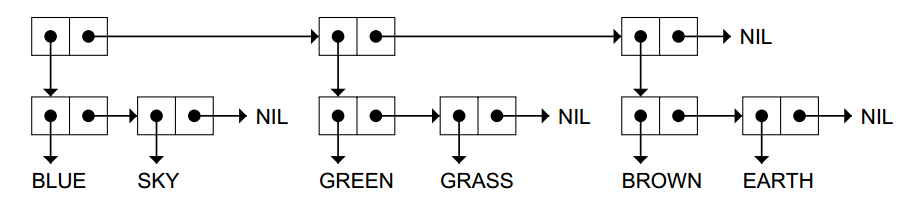
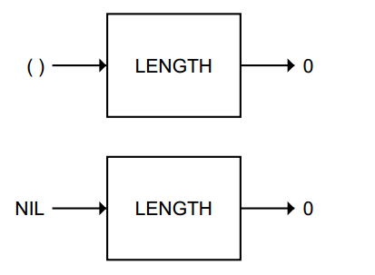
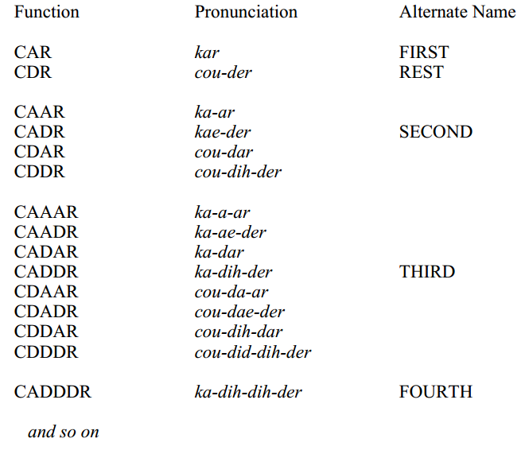
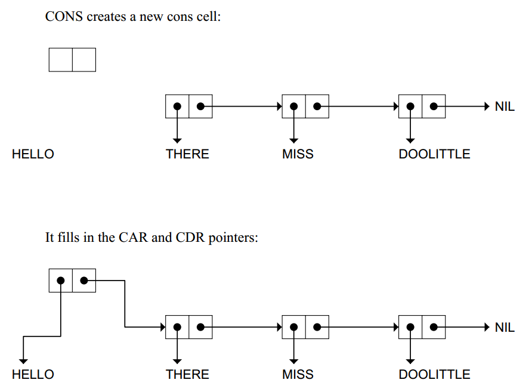
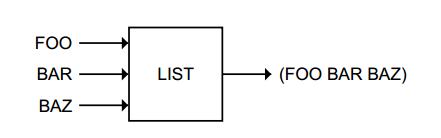
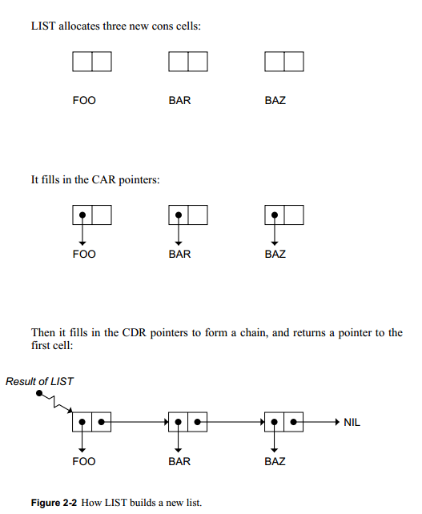
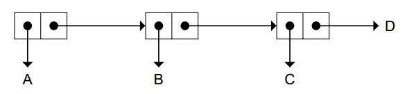
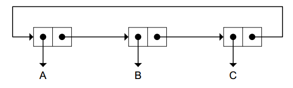
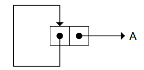

list
Listsare importantbecause they can be made to represent practically anything: sets, tables, and graphs, and even English sentences.
Functionscan also be represented as lists
Every list has two forms: a printed representation and an internalone. --API & reality in memory
((BLUE SKY)
(GREEN GRASS)
(BROWN EARTH))

LENGTH
NIL and the empty list are identical, (A NIL B)can
also be written (A( ) B)

FIRST,SECOND, THIRD, AND REST(return list except first)
C...R
CAR CDR
Besides naming the two halves of a cons cell, CAR and CDR are also the names of built-in Lisp functions that return whatever pointer isin the CAR or CDR half of the cell, respectively.
reverse order CADR = INPUT-->CDR-->CAR

CONS
The CONS function creates cons cells.Ittakes two inputs and returns a pointer to a new cons cell whose CAR points to the first input and whose CDR points to the second.
it returns a pointer to the new cell
 To really understandwhat CONS does, it is better to think about it using cons cell notation.
second input better be a list,or seems wired cause output is not a list(for right point to a non-cons cell)
x = CONS of (CAR of x) and (CDR of x) when x is not NIL
LIST
mutiple inputs


LISTP & CONSP &ATOM
CONSP is almost the same as LISTP; the difference is in their treatment of NIL. NIL is a list, but it is not a cons cell.(no memory block)
ATOM and CONSP are opposites
NULL
The NULL predicate returnsT if its input is NIL
dotted list
(A B C . D)

circular list
‘‘sharp-equal notation,’’
We will use integers for labels, and the notation #n= to label an object
\#1=(A B C . #1#)

\#1=(#1# . A)

The LENGTH of a listis the number of top-level cons cells in the chain. Therefore the length of (A B C . D) is 3, not 4.
SUMMARY
The important points about CAR and CDR are:
- CAR and CDR accept only lists as input.
- FIRST and REST are the same as CAR and CDR.
- SECOND and THIRD are the same as CADR and CADDR.
- Common Lisp provides built-in C...R functions for all combinations of CAR and CDR up to andincluding four As and Ds.
The symbol NIL has several interesting properties:
- NIL is a symbol. It is the only way to say ‘‘no’’ or ‘‘false’’ in Lisp.
- NIL is a list. It is the empty list; its LENGTH is zero.
- NIL is the only Lisp object that is both a symbol and a list.
- NIL marks the end of a cons cell chain. When lists are printed in parenthesis notation, the NILs at the end of chains areomitted by convention.
- NIL and () are interchangeable notations for the same object.
- The CAR and CDR of NIL are defined to be NIL.